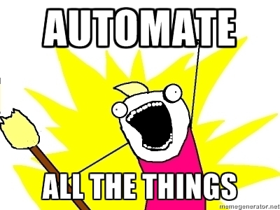

Operations
iborn.net
Skopje 2015
AGENDA
- Definition and responsibilities
- Benefits
- Issues
- Solution
Definition and responsibilities
- Collaboration with the other teams
- Working environment
- Well-established workflow
- Automation of processes

Issues
- Scenarios
1st scenario
- Issue is reported
- Estimated time: end of the day
- 2 possible outcomes based on the priority
Normal: Deployed in the next release - PROBLEM
Immediate: Hotfix performed - PROBLEM
Normal: Deployed in the next release - PROBLEM
Immediate: Hotfix performed - PROBLEM
2nd scenario
- Issue is reported (Normal priority)
- Estimated time: 2-3 days
- Meanwhile team of developers are developing priority project
- Both are scheduled for the next release week
PROBLEM: Issue depends on the status of priority project
PROBLEM: Issue depends on the status of priority project